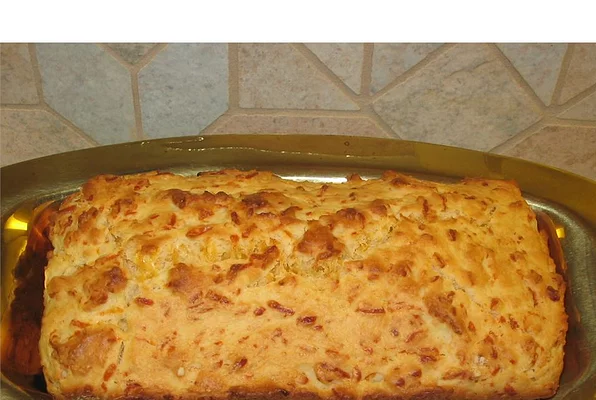

Cheese Bread

Quick and Easy Cheese Bread
This easy bread is excellent with anything from meatloaf, to soups, to chicken. Tastes wonderful, but is pretty crumbly.
Ingredients
- 1 3/4 cups all-purpose flour
- 1/4 cup white sugar
- 2 1/2 teaspoons baking powder
- 3/4 teaspoon salt
- 1 cup shredded Cheddar cheese
- 1 egg beaten
- 3/4 cup milk
- 1/3 cup vegetable oil
Steps
- Preheat oven to 400 degrees F (200 degrees C). Lightly grease a 9x5 inch loaf pan.ch loaf pan.
- In a large bowl, mix together flour, sugar, baking powder, salt and cheese. In another large bowl, beat together egg, milk and oil. Stir the flour/cheese mixture into the egg mixture, stirring until just moistened. Pour batter into prepared pan.
- Bake in preheated oven for 35 minutes, until a toothpick inserted into center of loaf comes out clean.